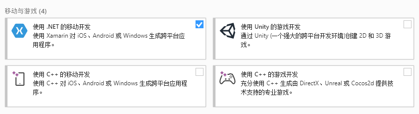
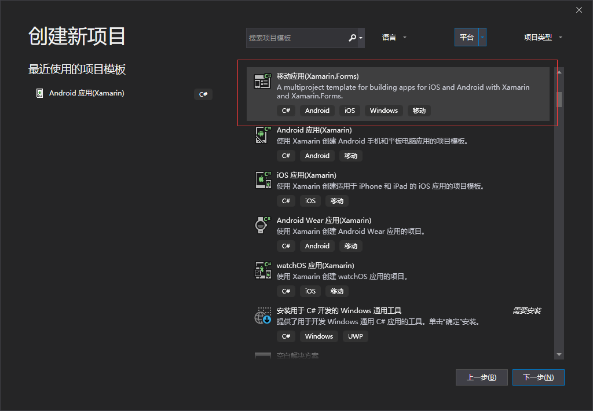

摘要 Xamarin成立于2011年5月16日。Xamarin 是一套基于C#语言的跨平台移动应用开发工具，2016年2月24日被微软正式收购。
很早就已经听说强大的.NET生态中有一个移动开发的解决方案叫Xamarin，也曾经翻阅过相关资料和教程，但由于国内资源较少，且全是英文，所以并没有深入研究。
如今随着.NET Core 3.0、VisualStudio 2019的发布，.NET的跨平台渐入佳境，又恰逢公司有APP方面的需求，所以决定会一会这个所谓的Xamarin（渣马润）。
Xamarin成立于2011年5月16日，2016年2月24日被微软正式收购，而后微软宣布将会在各个版本的Visual Studio中免费提供Xamarin，并且宣布Xamarin SDK开源。
Xamarin是一套基于C#语言的跨平台移动应用开发工具，开发人员可以使用C#编写原生的Andorid、Mac、iOS、UWP应用。
Xamarin主要包含Xamarin.Andorid、Xamarin.iOS、Xamarin.Forms。
（1）Xamarin.Andorid：为.NET开发人员提供了完整的Andorid SDK，可以构建完整的Andorid原生应用。
（2）Xamarin.iOS：为.NET开发人员提供了完整的iOS SDK，可以构建完整的iOS原生应用。
（3）Xamarin.Forms：为.NET开发人员提供了一个完整的跨平台UI工具包，开发人员可以通过（C#、XAML）轻松构建适用于各个平台（Andorid、iOS、UWP）的原生应用。
简单来说就是前两个分别能够使用C#开发Andorid和iOS应用，而Xamarin.Forms则可以用一套代码C#代码开发跨平台的应用。本系列只研究Xamarin.Forms。
Xamarin Forms的工作原理是将创建的UI元素从共享PCL（可移植类库）UI代码映射到Windows，Android和iOS上相应的原生代码。每个Xamarin Forms页面分为两部分，用于处理UI逻辑的Code Behind文件和制作UI界面的XAML文件。
Xamarin.Forms提供了两个创建应用程序用户界面的方式：
①XAML：可扩展应用程序标记语言，它和XML、HTML差不多。（WPF也是使用的XAML）
②C#：如果没有任何前端开发经验，可以使用这种方式。
随着宇宙第一IDE Visual Studio 2019 的发布，Xamarin的安装变得更加简单了。
1.下载VS2019安装程序
地址：https://visualstudio.microsoft.com/zh-hans/vs/
2.打开安装程序=》工作负载=》移动与游戏=》使用.NET的移动开发

3.点击安装
4.打开VS2019，点击创建新项目，在项目模版中找到移动应用(Xamarin.Forms)则安装成功。

本文链接：http://www.leo96.com/article/detail/38
欢迎添加个人微信号：Like若所思。
欢迎关注我的公众号，不仅为你推荐最新的博文，还有更多惊喜和资源在等着你!一起学习共同进步！